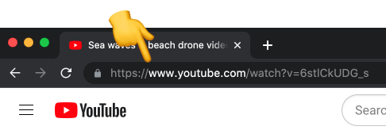

Quick shortcut to download videos
You can quickly download YouTube videos by replacing the "you" in youtube.com with "000". Here's an example:
https://www.youtube.com/watch?v=6stlCkUDG_s
👇
https://www. 000 tube.com/watch?v=6stlCkUDG_s
10downloader is a free online YouTube video downloader that allows users to download videos from YouTube instantly and easily. Simply paste a YouTube link in the textbox above and download your favorite videos right away.
With this YouTube downloader tool, you can download YouTube videos in HD quality without having to install any additional software or browser extensions. The tool is 100% online and free to use.
We've built this online video tool to allow teachers and educators to save videos for use in the classroom, journalists who want to keep a copy of important videos before they're removed from the platform, and others who wish to download YouTube videos that are copyright-free for offline use.
It is the safest and the best alternative to Y2Mate, SaveFrom, BTClod, QDownloader, BitDownloader, X2Mate, 4K Video Downloader, 8Downloader, and other websites that are filled with malicious ads.
How to download YouTube videos on PC?
Downloading videos from YouTube on your computer is a quick and straightforward process, thanks to the 10Downloader.
Here are the steps.
1. Go to YouTube's website and open the video that you want to download.
2. Copy the video's link from your browser's address bar.
3. Paste the link into the search box on 10Downloader, such as the one at the top of this page.

4. 10Downloader will automatically begin searching for the video. It will display the results within a few seconds.
5. Determine the video resolution that you want to save, then right-click on the Download button and select the "Save", "Save As", or "Save Link As" option. The naming will vary depending on the browser that you use.

6. The YouTube video will begin to download to your computer and will be saved to your default or the selected downloads folder.
Online YouTube Downloader FAQ
How can I download videos from YouTube?
- Open a web browser and go to YouTube. If you're on mobile, you can open the YouTube app alternatively.
- Go to the video that you wish to download and copy its link. On desktop, you can copy the video's link from the browser's URL bar. On the YouTube app, tap the share button and copy the URL.
- Go to 10downloader.com in a web browser.
- Paste the video's link into the search bar and press the Download button.
- Now select the format and quality that you want to download. The video will get saved to your device.
Do I need to pay to use this video downloader?
No. Our YouTube downloader is 100% free to use and you don't need
to pay for anything.
Which other websites are supported?
10Downloader works with YouTube only.
Can I use this YouTube video downloader on PC or mobile?
Definitely! Since our YouTube downloader is an online tool, you
can use it from any computer or mobile device that has access to
the internet. Simply open a web browser and visit
10downloader.com.
Is it safe to download videos from YouTube using this tool?
Yes! We do not collect or log any user data and the videos that
they download.